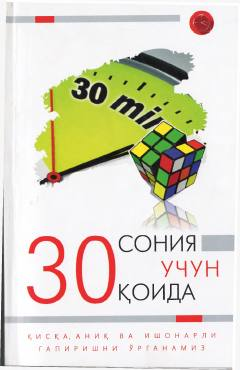

3СO'z fikringizni atigi o'ttiz soniyada ta'sirli va aniq yetkazish sirlarini o'rganing.
Ushbu kitob tinglovchining diqqatini jalb qilish, o'z fikrini atigi o'ttiz soniya ichida qisqa, ta'sirli va ишонарли tarzda bayon etish ko'nikmalarini o'rgatadi. Muallif oddiy tavsiyalar va usullar yordamida vaqtdan yutish hamda muloqotda yuqori muvaffaqiyatga erishish sirlarini ochib beradi.